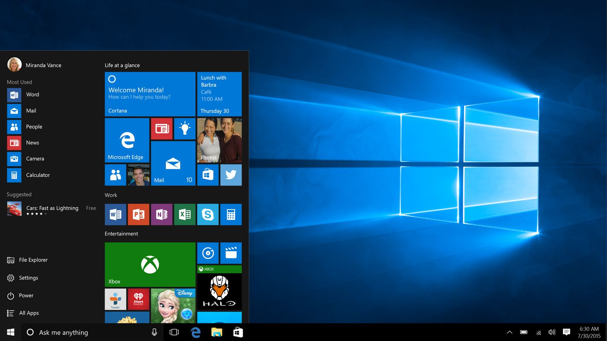

Upgrade theater ·
Reserve path ·
Edge
About Windows 10 · 2015

Version Museum 2015 desktop · not Win11
- Free upgrade window for eligible Windows 7 / 8.1 PCs (2015 product story)
- Start menu returns · Continuum / tablet lore
- Win7 residual still real for many machines — museum shell may stay Win7-honest
- Not 2014 Technical Preview-only · not invent Windows 11 chrome
Free upgrade REAL →